Атлас: 16 сидов × 2 режима для оценки мира целиком.
Сравнение с вашим Minecraft, Землёй, Марсом и Венерой → — все картинки в одном формате и с честным масштабом.
Было / стало: пять пунктов после сравнения → — те же кадры рядом, с планетами в масштабе 1:1000.
Климат: было / стало → — леса 12 % → 31,5 %, те же кадры рядом; решение о v0 после оценки картинки.
Восемнадцать картинок одного и того же мира, вид сверху. Нажми на любую — откроется в полный размер.
Обновлено: материки крупные, берега изогнутые; добавлены климат, биомы, реки, лава у стыков плит и место появления.
Проверено: карты для игры и для проверки совпадают, разрывов на стыках нет, все 16 сидов собраны в атлас. Осталось ваше впечатление от картинки — его ждём в атласе.
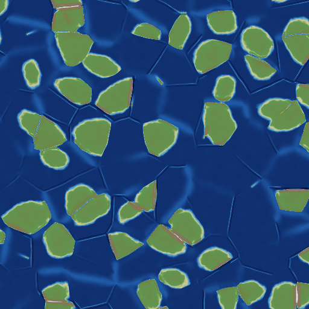
Главная карта: где море, где суша, где горы. Острова зелёные с неровными берегами, по краям некоторых — коричневые горные пояса, в океане — светлые хребты.
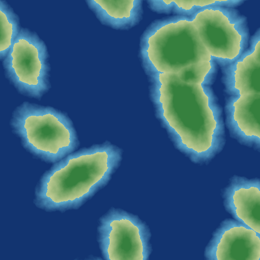
Та самая картинка, которую ты прислал, но уже с крупными материками. Зелёное пятно — суша, голубой ореол — её подводный край, тёмно-синий — океан. Гор здесь ещё нет.
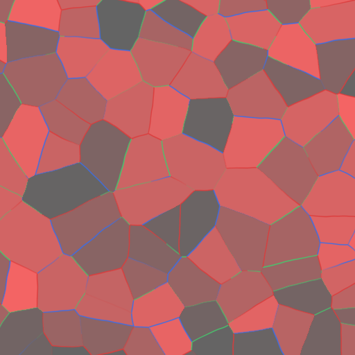
Да, это мозаика — и это нормально: так устроен внутренний каркас планеты, в игре этих цветов не будет. Важно, что швы изогнутые, а не прямая сетка.
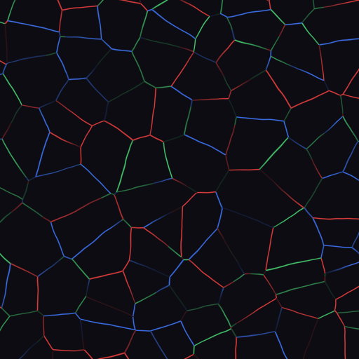
Что происходит на границах: красное — плиты сталкиваются (там вырастают горы), синее и зелёное — расходятся или скользят.
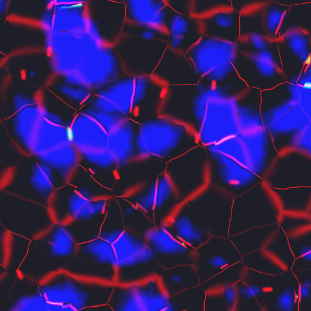
Красные полосы — самые «живые», горные границы; синие пятна — спокойные середины плит. Вспомогательная карта.
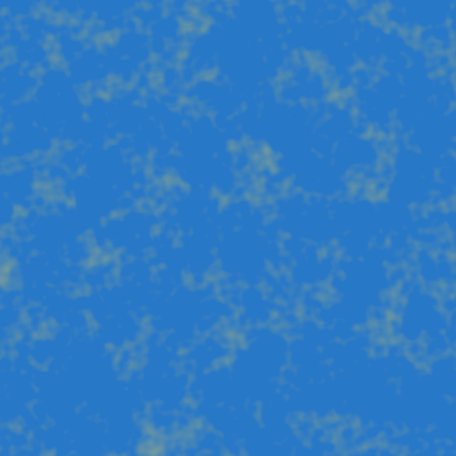
Техническая: следим, чтобы карта нигде не «помялась» и не сложилась складкой. Можно не смотреть.
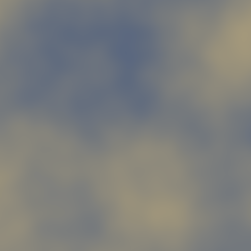
Случайное поле, из которого всё выросло. Тоже можно не смотреть.
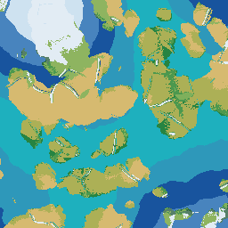
Какая точка станет лесом, степью, пустыней или тайгой; океаны раскрашены по температуре воды. Песок — только там, где зимой нет мороза; сухие холодные места стали равнинами. Это уже «целевая» карта для игры.
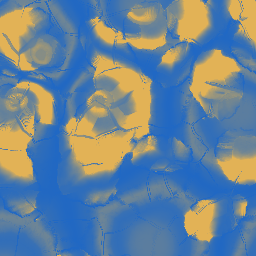
Синее — много осадков, рыжее — сухо. Смотрим, есть ли влажные наветренные берега, сухие субтропики и дождевая тень за горами.
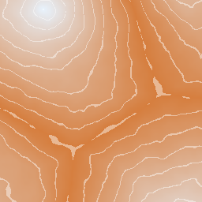
Тепло и холод задаются не сверху и снизу, а множеством полюсов-точек: вокруг каждого холодно, между ними широкие тёплые зоны. Светлые линии — каждые 10°.
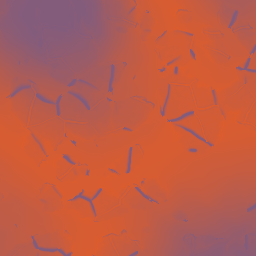
Синее — холод, красное — жара. В горах холоднее, а в глубине материков зима резче, чем у берега.
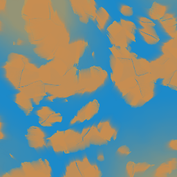
Синее — воздух пришёл с океана и несёт воду, рыжее — он уже высушился над сушей. Этот слой объясняет, почему океан рядом не гарантирует дождь.
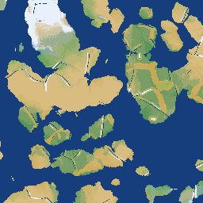
Классификация по теплу и сухости: от полярных пустошей через тундру и тайгу до степей и тропических лесов.
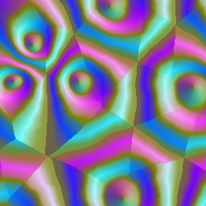
Три пояса постоянных ветров; у экватора штиль. Вспомогательная карта: она решает, откуда к нам придёт влага.
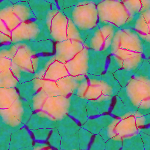
Три числа, которыми ваниль строит рельеф и биомы. Техническая проверка: резких скачков и «стен» здесь быть не должно.
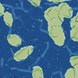
Голубые линии — русла. Часть идёт вдоль разломов и подножий гор, часть проложена вниз по склону от горных истоков. В океане реки заканчиваются.
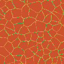
Тёплое — места, где глубоко под землёй должна быть лава. Она привязана к швам плит, а не разбросана где попало; вдали от швов остаётся слабый фон.
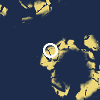
Карта центрирована на том месте планеты, где окажется блок (0, 0). Светлое — суша умеренного климата без высоких гор; белое кольцо — радиус 2048 блоков, в котором игра ищет точку спавна.